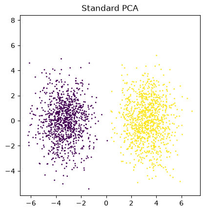
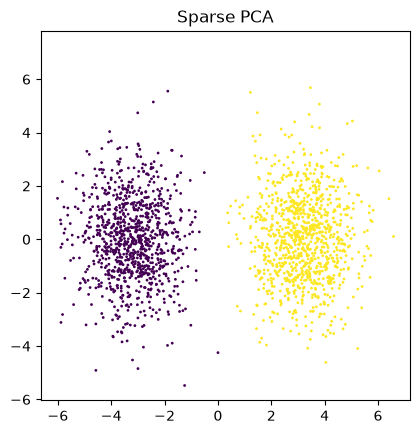
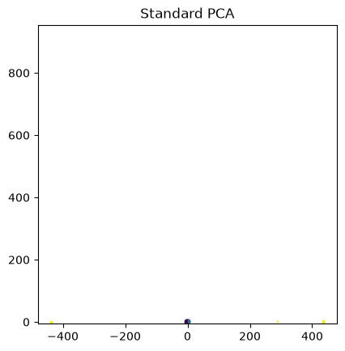

Implementation notebook
- Title: Subspace clustering in high-dimensions: Phase transitions & Statistical-to-Computational gap
- Authors: Pesce, Loureiro, Krzakala, Zdeborová
- Year: 2022
Generative model
We suppose that the dimension of the space is \(d=4000\) and that the number of clusters is \(k=3\). Let \(\alpha=2\) the ratio between the number of total data points and the dimension. In other words \(n\approx\alpha\cdot d=8000\).
Let \(\rho\) the density of the active elements, the sparsity is described by \(s\approx\rho\cdot d\). Here, we will use \(\rho=0.05\) and \(s=200\)
\(\lambda\) is the SNR that describes the separability of the clusters.
Setup of the model
threshold=17.67766952966369Generative model
class Generator:
def __init__(self, n, k, d, rho):
# make balanced labels
labels = torch.randint(0,k,(n,))
# make the matrix U
U = torch.zeros(n, k)
U[torch.arange(n), labels] = 1
U = U - 1/k
# make a vector with d bernoulli samples
samples = torch.rand(d) < rho
# only where samples is True the matrix has values like N(0,1)
V = torch.zeros(d,k)
nz = int(torch.sum(samples).item())
V[samples] = torch.randn(nz,k)
W = torch.randn(d,n)
X = (lam / s)**0.5*V@(U.T) + W
self.__X = X
self.__W = W
self.__V = V
self.__U = U
self.__labels = labels
def get_values(self):
return self.__X
@property
def W(self):
return self.__W
@property
def V(self):
return self.__V
@property
def U(self):
return self.__U
@property
def labels(self):
return self.__labelstorch.Size([1000, 2000])PCA clustering

sparse PCA clustering

Show
def compute_jacobian(func, x):
# func image shape (batch, n1, ..., nm)
# x shape (batch, k)
# J shape (batch, n1, ..., nm, k)
J = vmap(jacrev(func), randomness='same')(x)
return J
def denoising_func_u(A,B):
# A: size (k,k)
# B: size (n,k)
flag = False
if B.ndim == 1:
flag = True
B = B.reshape(1,-1)
U = torch.eye(k) - 1/k # shape (k,k)
exp_argument = B @ U - 0.5 * torch.einsum('ni,ij,nj->n',U,A,U)[None,:]
exp_argument = exp_argument - exp_argument.max(dim=1, keepdim=True)[0]
exp = torch.exp(exp_argument) # shape (n,k)
w_exp = exp @ U # shape (n,k)
sol = w_exp / torch.sum(exp, dim=-1, keepdim=True) # shape (n,k)
if flag:
sol = sol.reshape(-1)
return sol
def denoising_func_v(A,B):
# A: size (k,k)
# B: size (d,k)
flag = False
if B.ndim == 1:
B = B.reshape(1,-1)
flag = True
IpA = torch.eye(k) + A
invIpA = torch.linalg.inv(IpA) # shape (k,k)
invIpAb = torch.einsum('pk,dk->dp', invIpA, B)
binvIpAb = torch.einsum('dp,dp->d',B, invIpAb)
ret = (rho * invIpAb) / (rho + (1-rho)*(IpA.det())**0.5*torch.exp(-binvIpAb*0.5))[:,None]
if flag:
ret = ret.reshape(-1)
return ret
def algorithm_2(X, std, tmax):
# size (d,n)
U_prev = torch.zeros(n,k)
V_prev = torch.zeros(d,k)
U = torch.randn(n,k)*std # nxk
V = torch.randn(d,k)*std # dxk
A_u = torch.empty(k,k) # kxk
A_v = torch.empty(k,k) # kxk
B_u = torch.empty(n,k) # nxk
B_v = torch.empty(d,k) # dxk
sigma_u = torch.zeros(n,k,k) # nxkxk
sigma_v = torch.zeros(d,k,k) # dxkxk
for _ in range(tmax):
A_u = lam / s * (U.T @ U) # kxk
A_v = lam / s * (V.T @ V) # kxk
B_v = (lam / s)**0.5 * X @ U - lam / s * torch.einsum('pq,jqk->pk', V_prev, sigma_u)
B_u = (lam / s)**0.5 * X.T @ V - lam / s * torch.einsum('pq,jqk->pk', U_prev, sigma_v)
V_prev = V.clone()
U_prev = U.clone()
V = denoising_func_v(A_v,B_v)
U = denoising_func_u(A_u,B_u)
sigma_v = compute_jacobian(lambda B: denoising_func_v(A_v,B), B_v)
sigma_u = compute_jacobian(lambda B: denoising_func_u(A_u,B), B_u)
return V, U, sigma_v, sigma_u
Vapp, Uapp, sigma_v, sigma_u = algorithm_2(X, 0.01, 100)
Xapp = (lam / s)**0.5 * Vapp @ Uapp.TShow
Xappfit = pca_object.transform(Xapp.T)
# plot
mixed = np.concatenate((red_np_X, Xappfit))
labels = myGen.labels.numpy()
labels = np.concatenate((labels,np.ones(Xappfit.shape[0])*(k+1)))
plt.scatter(mixed[:,0], mixed[:,1], c=labels, alpha=1, s=1)
plt.axis('square')
plt.title("Standard PCA")
plt.show()